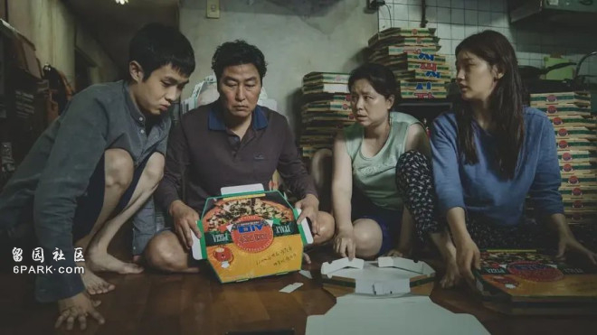

在某一个瞬间，怀胎的彩华理解了那些不顾一切想要将孩子生下的“自私”的父母——“出生”和“退出”的权利，到底应该由谁来决定？
当人们以自由意志之名赋予胎儿决定是否降生的权利时，是否在一定程度上违背了自然，抹杀了许多可能性？
《出生意愿确认》给我们留下了无限延绵的追问。
——作者 ：张文曦
在连续53个月总人口人数减少之后，韩国统计厅近期公布的《2024年3月人口动向》道明了生育的困境。报告显示，韩国一季度总和生育率跌至0.76，出生人口数仅为6万人。
被低生育率和人口负增长困扰的不只是韩国。日本2023年的生育率刷新了1947年有统计数据以来的最低值；在西班牙，每名妇女生育1.12个孩子，远低于世界平均水平。
持续走低的出生率背后，是婚育年龄人群不断下降的生育意愿。对于生育这件事，年轻一代变得更加审慎、小心。他们对于生育的抗拒，或许不仅仅来源于表面的生存、教育、医疗等方面的经济压力，而是埋在更深刻、更幽微之处。
01
出生的权利，
到底应该由谁决定？
如果让你重新选择一次，是否出生于这个世界上，你会怎么选？
或许，在许多人脑中都曾浮现过这个问题。而小说《出生意愿确认》将这个不可能实现的假想设问变成了虚构的现实。
在这个架空的科幻故事里，生育不再是一件仅由父母决定的事情。
一场持续10年的“未经同意分娩诉讼”刺激了舆论对“人有权决定自己是否出生”的讨论。一段时间过去后，各国开始将同意出生制度纳入法律。科技和制度的发展，使得生育的主动权被赋予了胎儿，而非父母。
母亲腹中的婴儿会在分娩前通过特殊仪器被询问是否想要降生在这个社会和家庭中。只有胎儿同意降生，父母才有权利将其生下。若不同意，母亲就要立刻终止妊娠，不得违背胎儿意愿，否则便有可能被处以刑罚。
佳织和彩华是一对情侣，彩华通过试管婴儿技术怀上了一个孩子。彩华出生于同意出生制度出台的那年，她从小接受的教育，就是把尊重胎儿出生的意愿视为理所应当。和很多人一样，她认为那些在制度出台之前、未经确认就来到这个世界上的孩子，既痛苦，又可怜。她自己也感叹，幸好自己是被征求过意见才出生的。
然而，随后发生的一系列事件逐渐撼动了彩华一直以来的想法。
怀胎8个月时，彩华的姐姐直截了当地和她说不希望她去做出生意愿确认。原来，姐姐曾在自己怀孕时发现胎儿有先天疾病，胎儿拒绝出生，因此被剥夺了拥有孩子的机会。
姐姐认为，出生意愿确认这件事，本质上完全不符合自然规律，胎儿明明对这个世界一点都不了解，科技和制度却用自由意志的幌子强迫他们做出重要的选择。人们一面讴歌生命的自主权，又一面剥夺了一个孩子降临在世界上的权利。但在彩华眼里，姐姐的观点里有许多思想偏激的地方。当时的彩华还是觉得，同意出生制度的出台，恰恰就是为了避免不想来到世上的人开始他们的一生。
临产前，彩华和佳织按照要求进行出生意愿确认检查。在看到“拒绝出生”的胎儿检查结果时，两人先是感到不可置信，但并不死心。她们试图在各处寻找医生帮助她们重新进行检查，以扭转胎儿的出生意愿。
见她们执意如此，一位医生向她们提问：如果反复询问后让对方在强迫状态下表示了同意，就不能算是按真正的自由意志做出的决定，对吧？
“可如果这么说的话，我们平时不也在各种外界信息的影响下，决定许许多多的事情吗？什么是真正的自由意志，什么又是外界的影响？能如此简单就划分清楚吗？”佳织如此反驳道。
在某一个瞬间，怀胎的彩华理解了那些不顾一切想要将孩子生下的“自私”的父母——“出生”和“退出”的权利，到底应该由谁来决定？当人们以自由意志之名赋予胎儿决定是否降生的权利时，是否在一定程度上违背了自然，抹杀了许多可能性？
小说给我们留下了无限延绵的追问。
02
不生孩子的，
各有各的原因
如果说，贫乏的物质条件和缺爱的家庭环境，让生育后代这件事显得困难重重；那么，倘若拥有较为富足的社会经济条件，但仍对生育一事持消极态度，似乎不符合人们的想象。
事实上却是，以韩国为代表的发达国家，拥有着全世界倒数的生育率。
6月19日，韩国总统尹锡悦正式宣布国家进入“人口紧急状态”。2023年，韩国新生儿人数跌破23万，总和生育率（女性一生中预计生育的孩子数量）降至0.72，双双创下有相关记录以来的新低。“不约会”“不结婚”“不生子”的“三不主义”在韩国年轻人圈子中流行，婚姻和生育，在韩国年轻一代心目中的地位不断下降。
与下降的生育率相对的，是韩国在鼓励生育方面做的接连努力。从2006年开始，韩国政府累计投入了360万亿韩元（约合人民币1.89万亿元）提供各类补贴以鼓励生育。然而，即便如此，各类帮扶政策仍无法阻止韩国沦为生育率的洼地。
对此，韩国女性家族部前副部长金京善认为，许多生育政策的支持主要惠及的是大企业和公共机构，劳动者和个体户这类相对弱势的群体很难享受到这些福利。
而房贷成本的上涨，也在进一步侵蚀韩国家庭的生育意愿。
韩国公共财政研究所研究认为，过高的生活成本会破坏民众的婚姻率和生育率。房价在任何一年内上涨1%，总和生育率就会下降0.203%。2023年9月，韩国央行在提交给国民议会的季度报告中指出，房价收入比已达到26——这意味着，在2024年一个普通工人需要将全部工资存起来26年才能购买一套90平方米的中型公寓。而房价收入比这一数据，在2019年为17.6。

内卷的社会竞争，也是韩国年轻人不愿意生孩子的重要原因之一。
不断创下业绩新高的课外补习产业，就是韩国教育成本上涨的缩影。根据韩国教育部和统计厅的数据，2022年该国学生课外补习率高达78.3%。也就是说，10名韩国学生里，就有大概8名学生进行校外补习。而平均下来，每个学生在补习班上的月支出达到了41万韩元（约合人民币2173元），比2021年增长11.8%。
穷养，在韩国似乎是一件注定不可能的事。“大家觉得养孩子要花一大笔钱，与其花这么多钱养个孩子，不如结婚和自己的伴侣好好享受生活。”在一个关于生育意愿的街头采访中，受访的韩国年轻情侣如此说道。
另一方面，思想上的解放也改变了许多人对生育的选择。
曾经，相夫教子是传统女性难以回避的默认选项。女性的重要身份之一，便是养育后代的母亲。生产的痛苦、成为母亲后自我时间的牺牲等内容，则鲜少被谈论。
随着女性思潮的发展和社会开放程度提高，越来越多人不再忌讳谈论性，也不再避讳正视生育可能给女性身体带来的伤害。这部分以往难以出现在传统媒体上的内容，在社交媒体上广泛传播，算法推荐机制重复多次地强化了它们的存在感。在了解到生育可能给女性带来的一系列身体后遗症、生育手术风险、家庭和职场的性别歧视现状等情况后，女性更倾向于优先考虑自身，对生育的态度自然变得越来越谨慎。
除了加剧了年轻人的恐婚和恐育情绪，社交媒体的回音壁效应还让“厌童”这件事变得更为稀松平常。
“NO KIDS ZONE”（无儿童区）的标签竖立在韩国的一些公共场所里，无儿童区禁止12岁以下的儿童入内。在韩国，这类禁止儿童入内的咖啡馆和餐厅，已经超过了500家。
2012年，一则熊孩子闹事、失责母亲假扮受害者的新闻引发韩国网络激烈讨论，建立无儿童区的呼声不断高涨。“父母没有看管好熊孩子而影响他人”的事件，在以年轻人为主体的网络中传播。吵闹、破坏规则、不守秩序，变成了许多人对儿童的第一印象。随之而来的，是越来越低的生育意愿。
03
解放后的生育权，
一边自由一边迷茫
抛去经济压力和社会文化的影响，还有一种更为底层的思想，影响着人们的生育意愿。
和“要感谢父母把你带来这个世界上”相对，一部分声音认为，父母在生下孩子之前并未征得孩子的同意，是一种单纯的利己行为。
就像《出生意愿确认》书中的设定那样，主张出生意愿确认的人强调未出生后代的主体性，批判父母看似无私的生育行为。这种说法，逐渐浮现在人们讨论生育率时的对话中。然而，实际上，早在古希腊、基督教、佛教等思想中，都能找到它的原型和踪迹。
“最好的事就是从不出生；但当一个人得见天日，次好的事就是离开从哪儿来，就尽快回哪儿去。”古希腊的作家索福克勒斯在剧作《俄狄浦斯在科罗诺斯》中写道；在莎士比亚笔下，哈姆雷特对奥菲利亚说，如果一个人要有许多过错，那他的母亲还是不要生下他为好；《浮士德》第一部里，更是记载了浮士德希望自己从未出生过的悲愤。
看到尚在襁褓中的婴儿，就也看到了他在高压的补习班里刷题、被剥夺玩乐时间、加入找工作大军、背上房贷和车贷的未来一生。
当然，在一些人看来，这是一种极为悲观的想法。好比鲁迅在文章里举的例子：一家人的孩子刚刚满月，抱出来希望得到众人的祝福，这时，有一个人不合时宜地说了句真话，说：“这孩子将来是要死的”。结果得到一顿众人合力的痛打。
即便终点都毫无偏差地指向死亡，不少人会在过程中寻找到各自的意义。
曾经，生育这件事作为一个不容置疑的铁律，深深地刻在了人们的脑子里。而如今传统观念已经松动，人们有了选择的余地和空间。
与此同时，在一部分人身上，生育下一代的渴望依旧存在。
人们似乎很自然地认为，无论生育与否，都是年轻一代的自主选择。只是，就像佳织反驳医生时说的那样，所有人都是在各种外界信息的影响下，决定许多的事情。
那么，当我们选择生育或拒绝生育时，这到底是我们真正的自由意志，还是受外界影响做出的决定？这个问题的答案，或许连我们自己都不得而知。